Italy's Wine
Importadora · Distribuição
Encerramento de Ciclo · Seleção Especial
Alguns rótulos têm
Alguns rótulos têm
apenas uma última chance.
Talvez não voltem mais.
Uma seleção de rótulos italianos que encerra seu ciclo no portfólio Italy's Wine. Sem previsão de retorno. Sem garantias. Para distribuidoras, restaurantes e adegas que entendem que certas janelas se fecham — e não voltam a abrir.
Ver Seleção Completa
Enquanto existir estoque
Mais de 100 rótulos encerrando ciclo agora —
Amarones, Barolos, Brunellos e seleções sicilianas.
Sem previsão de reposição.
Talvez seja a última vez que você os encontre.
Destaques da Seleção
Os rótulos que merecem estar no seu acervo

Amarone della Valpolicella DOCG
Amerigo Vespucci
Amerigo Vespucci
Vêneto · Itália
O rei da Valpolicella produzido com uvas passificadas.
Estrutura monumental, taninos sedosos.
Encerra o ciclo no portfólio Italy's —
talvez não volte ao mercado brasileiro.
Última oportunidade

Barolo DOCG Langates
Piemonte · Itália
O vinho dos reis. O rei dos vinhos.
Nebbiolo em sua expressão mais nobre, da região mais nobre da Itália.
Últimas unidades disponíveis — sem previsão de retorno.
Últimas unidades

Brunello di Montalcino DOCG
Baccio
Baccio
Toscana · Itália
Um dos grandes vinhos do mundo, encerrando o ciclo no portfólio Italy's.
Elegância atemporal que define o melhor da Toscana.
Para quem reconhece que certas garrafas não voltam.
Última oportunidade

Amarone della Valpolicella Riserva
Anticavigna
Anticavigna
Vêneto · Itália
Mais tempo em barrica. Mais profundidade. Mais raridade.
A versão Riserva encerra o ciclo —
para compor o acervo premium antes que feche esta janela.
Última oportunidade

Outros Rótulos em Encerramento de Ciclo
Uma Itália inteira — pela última vez

Piemonte
Barbaresco DOCG Terra dei Savoia
Última oportunidade

Piemonte
Barbera d'Asti DOCG Boeri
Última oportunidade

Sicília
Mamertino DOC Nero d'Avola
Última oportunidade

Vêneto
Valpolicella DOC Superiore Ripasso Sartori
Última oportunidade

Toscana
Morellino di Scansano DOCG Montagnana
Últimas caixas

Puglia
Primitivo Salento IGP Donna Marzia
Última oportunidade

Espanha
Gran Reserva La Mancha Oro del Toro
Última oportunidade

Emília-Romanha
Lambrusco dell'Emilia IGT Michelangelo
Últimas caixas
+ mais de 90 outros rótulos na seleção completa
· · ·
"Encerramos este ciclo.
O que foi, foi.
O que resta —
é a última chance."
Sem previsões. Sem promessas de retorno. Estes rótulos encerram no portfólio Italy's — e com eles, talvez a última oportunidade de tê-los. Para quem entende que certas garrafas não voltam.